מבואמקבלים תמונת מצבמכוונים למסלול הנכוןמגיבים למצבים מיוחדיםחוצים את קו הסיום
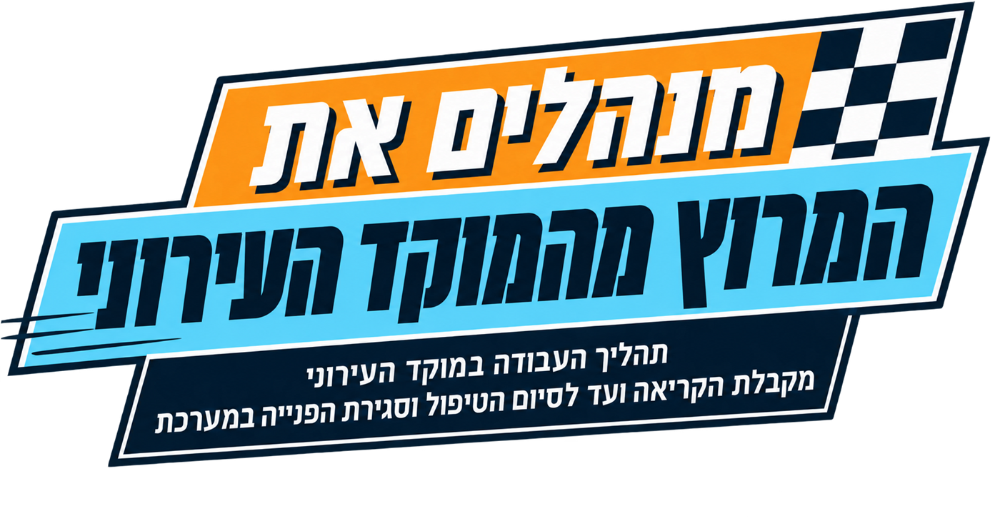
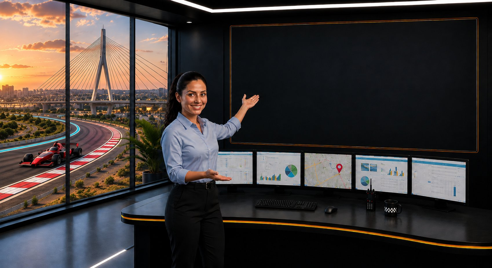
המנוע של המרוץ
במירוץ זה תלמדו על תהליך העבודה במוקד העירוני, משלב קבלת הפנייה ועד להעברת הטיפול לגורם המתאים, כך שבזמן אמת אתם תדעו לתת את המענה המקצועי ביותר. לאורך המירוץ תפגשו מצבים מהעבודה היומיומית במוקד, תענו על שאלות, תקבלו החלטות ותתנסו בפעולות במערכת.
לפני שמתחילים, כמה דברים שכדאי להכיר:
ניתן להתקדם קדימה ולחזור אחורה באמצעות כפתורי הניווט בתחתית המסך.
סרגל ההתקדמות העליון יציג בכל שלב באיזה פרק אתם נמצאים וכמה מהלומדה כבר השלמתם.
במהלך הלומדה יופיעו שאלות ותרגולים שיעזרו לכם ליישם את הידע הנלמד. בחלק מהמסכים תתבקשו ללחוץ על אזורים שונים במסך, לבחור תשובות או לקבל החלטות כפי שנעשה בעבודה במוקד.
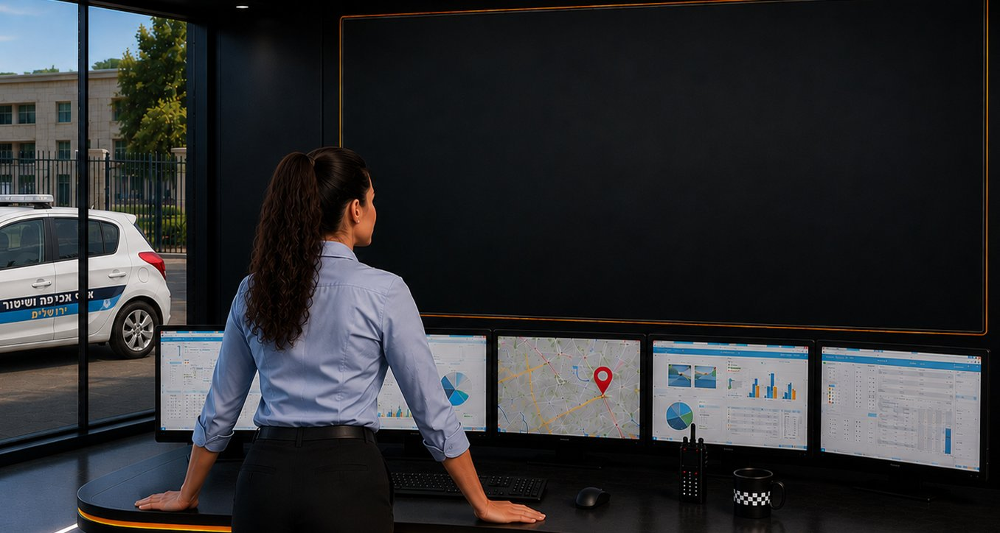
ניתוב הפניות למסלולים המתאימים
בכל יום מתקבלות במוקד העירוני פניות מתושבים מכל רחבי העיר. מאחורי כל פנייה נגלה: מה קרה, היכן התרחש האירוע, מה היקפו ומי הגורם המתאים לטיפול.
כמנהלי המרוץ העירוני, תפקידכם הוא להקשיב, לאסוף את המידע הנדרש ולוודא שהפנייה נכנסת למסלול הטיפול הנכון. אתם מנתבים את התהליך, וכל פעולה שתבצעו תשפיע על המשך הטיפול בפנייה.
במהלך המירוץ נעקוב אחר מסלול העבודה במוקד – מקבלת הפנייה, דרך איסוף המידע והשלמת תמונת המצב, ועד להעברת הפנייה לגורם המתאים להמשך טיפול.
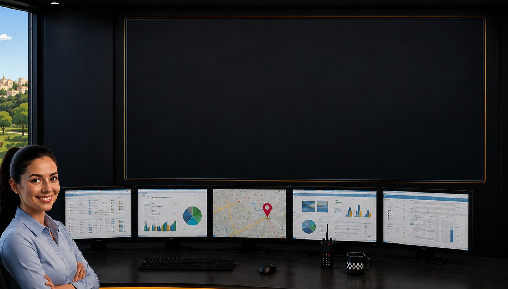
בסיום המירוץ תוכלו:
לקלוט פנייה בצורה נכונה
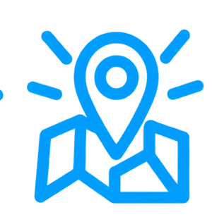
לזהות מיקום בצורה מדויקת
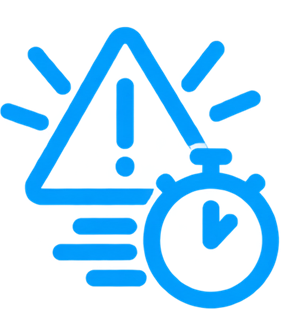
לזהות מקרים המחייבים טיפול מיידי
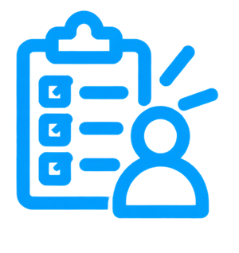
לאסוף את המידע הנדרש מהתושב
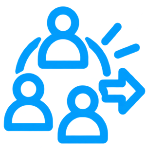
לזהות את הגורם המתאים ולהעביר אליו את הפנייה
מקבלים תמונת מצב
כל מרוץ מתחיל בהיכרות מדויקת עם מה שקורה על המסלול.
בפרק זה תלמדו כיצד לקבל את הפנייה, לשאול את השאלות הנכונות, ולאסוף את המידע החיוני לפני שמזניקים את הגורם המטפל.
כעת מתקבלת שיחה חדשה במוקד.
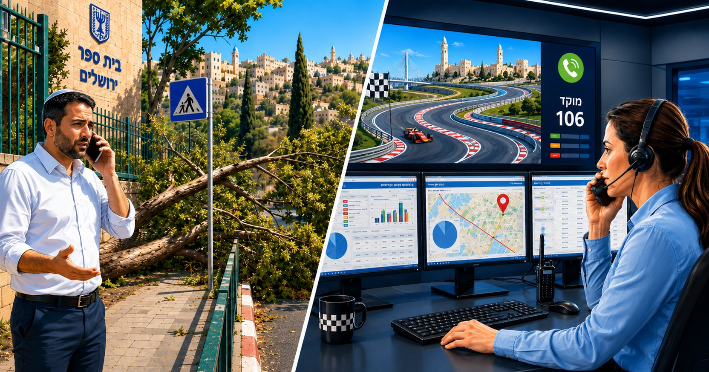
מוקדנית: "מוקד שלום, מדברת מאיה, במה אוכל לעזור?"
תושב: "יש עץ שנפל וחוסם את המדרכה ליד בית הספר."
האם יש לנו תמונת מצב מספקת כדי להזניק את הטיפול?
נכון מאוד!עדיין חסרים פרטים לפני שממשיכים במסלול!
אנחנו יודעים שיש עץ שנפל, אבל עדיין חסר מידע שיסייע להבין את התמונה המלאה:
המיקום המדויקהיקף המפגעהאם מדובר בשטח ציבורי או פרטיאופן הטיפול הנדרש
אבל תחילה נבקש מהתושב את פרטיו האישיים: שם וטלפון. ניתן לקבל גם דיווח אנונימי באמצעות סימון האפשרות המתאימה.
חשוב לזכור:כאשר הדיווח אנונימי, לא ניתן יהיה לחזור לפונה לצורך השלמת מידע או עדכון בהמשך הטיפול.
לא נכון…עדיין חסרים פרטים לפני שממשיכים במסלול!
אנחנו יודעים שיש עץ שנפל, אבל עדיין חסר מידע שיסייע להבין את התמונה המלאה:
המיקום המדויקהיקף המפגעהאם מדובר בשטח ציבורי או פרטיאופן הטיפול הנדרש
אבל תחילה נבקש מהתושב את פרטיו האישיים: שם וטלפון. ניתן לקבל גם דיווח אנונימי באמצעות סימון האפשרות המתאימה.
חשוב לזכור:כאשר הדיווח אנונימי, לא ניתן יהיה לחזור לפונה לצורך השלמת מידע או עדכון בהמשך הטיפול.
אוספים נתונים מהמסלול
לחצו במסך על אזור השדות בהן ממלאים את פרטי התושב
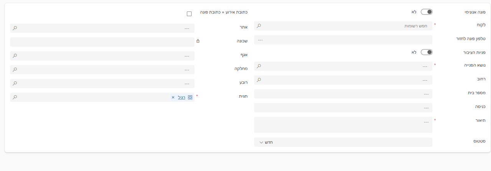
מעולה! זיהיתם את השדות הנכונים
בחרתם בשדה לא נכון נסו שוב…
בחרתם בשדות לא נכונים לפניכם השדות הנכונים
התושב דיווח: "יש עץ שנפל וחוסם את המדרכה ליד בית הספר."
איזו שאלה תסייע לכם להשלים את התמונה?
נכון מאוד!קיבלנו נתונים חשובים מהמסלול.
השאלה מסייעת לזהות גם את מיקום המפגע וגם את היקף החסימה. ככל שתמונת המצב מדויקת יותר, כך יהיה קל יותר לכוון את הפנייה לגורם המתאים.
לא מדויק…עדיין חסרים לנו נתוני מפתח.
המידע עשוי להיות רלוונטי בהמשך, אך בשלב זה עלינו לזהות קודם את המיקום המדויק ואת היקף המפגע.
אוספים נתונים מהמסלול
תשובת התושב: "מדובר בבית ספר נופים, ברחוב שדרות הרצל 137. המעבר כמעט חסום לגמרי."
קיבלנו מידע מהותי!
כתובת המפגע חשובה לנו כדי לדייק את הגורם המטפל שנשלח לטיפול באירוע המדווח.
לחצו במסך על אזור השדות של הכתובת להמשך
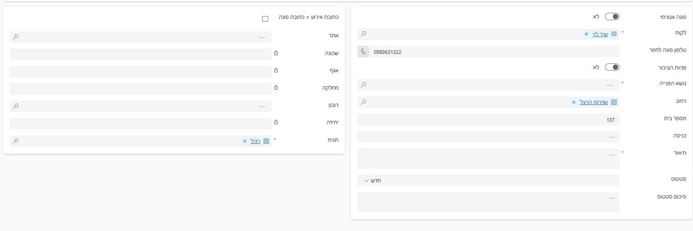
מעולה! זיהיתם את שדות הכתובת
בחרתם בשדות לא נכונים נסו שוב…
לא נכון… לפניכם השדות הנכונים
אוספים נתונים מהמסלול
כעת עלינו למלא את נושא הפנייה ואת תיאור הפנייה.
לחצו במסך על השדות לפי הסדר הנכון:
1. נושא הפנייה2. תיאור הפנייה3. לאחר שהפנייה עברה לגורם המטפל, לחצו על סטטוס "בטיפול"
חדש
בטיפול ✓
מעולה!
בחרתם בשדה לא נכון נסו שוב…
לא נכון… לפניכם השדה הנכון
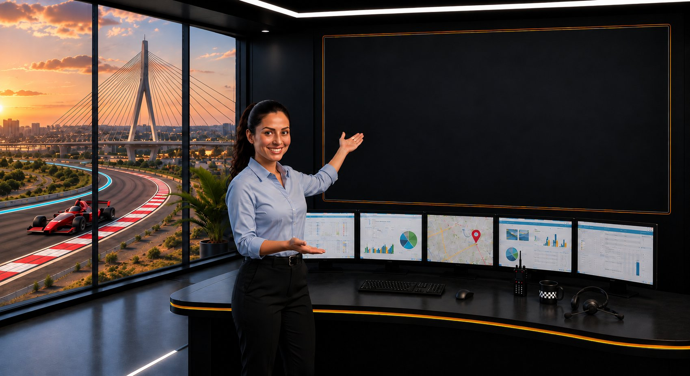
שימו לב לנקודת הבקרה הבאה!
לאחר מילוי נושא הפנייה ותיאור הפנייה, המערכת מזהה באופן אוטומטי את המסלול הנכון לטיפול מתאים ומדויק, ומציגה את האגף והמחלקה הרלוונטיים.
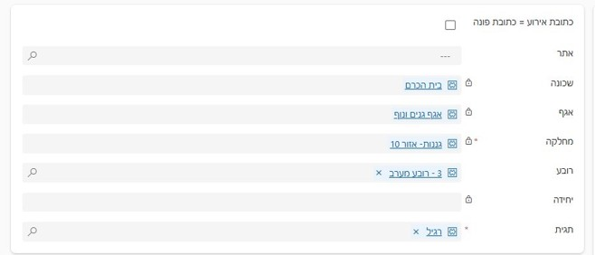
מסווגים את הפנייה לתנאי המסלול
לאחר השלמת פרטי הפנייה, חשוב לבדוק גם את תגית הפנייה. ברירת המחדל במערכת היא: רגיל.
כאשר תנאי השגרה משתנים, יש לבחור את התגית המתאימה למצב שבו התקבלה הפנייה, למשל:
רגיל (ברירת מחדל)סערהחרבות ברזלועוד…
בחירת התגית מסייעת למערכת לשייך את הפנייה למצב הפעילות הנכון ולהתאים את המשך הטיפול.
מסווגים את הפנייה לתנאי המסלול
לחצו על שדה תגית הפנייה והכירו את האפשרויות
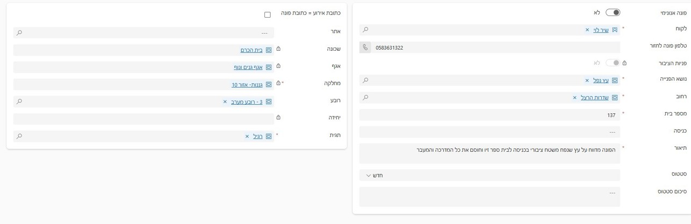
רגיל ✓ ברירת מחדל
סערה
חרבות ברזל
ועוד...
מעולה! משנים את התגית רק כשתנאי השגרה משתנים
בחרתם בשדה לא נכון נסו שוב…
לא נכון… לפניכם השדה הנכון
התושב ממתין על הקו… הזנת המידע למערכת אורכת זמן.
קיבלתם את כל פרטי הדיווח, אך הזנת המידע למערכת אורכת זמן.
כיצד נכון לפעול בזמן שאתם משלימים את התיעוד?
נכון!שומרים על קשר גם בעמדת הבקרה.
גם בזמן עצירה בעמדת הבקרה, חשוב לשמור על קשר עם התושב. שיתוף קצר במה שאתם עושים מונע תחושת המתנה וחוסר ודאות, ומבהיר לתושב שהפנייה ממשיכה להתקדם במסלול הטיפול.
לא מדויק…שתיקה ממושכת עלולה לגרום לתושב לחשוב שהשיחה נתקעה.
כאשר הזנת המידע אורכת זמן, חשוב להסביר בקצרה מה אתם עושים ולשמור את התושב מעודכן.
מכוונים למסלול הנכון
העברת הדיווח לגורם המטפל
סיימתם לאסוף את פרטי הדיווח, וכעת תמונת המצב מלאה: אתם יודעים מה קרה, היכן נמצא האירוע ומה היקפו, והמערכת כבר מציגה את האגף והמחלקה האחראים לטיפול.
עכשיו הגיע הזמן לדייק את מסלול הפנייה ולוודא שהיא מגיעה לגורם הנכון,
בפרק זה תלמדו :
כיצד לזהות במערכת את שדות האגף והמחלקה
לבדוק אם קיימת חלוקה לפי נפה, אזור או רובע
להיכנס לניהול ידע ולאתר את אנשי הקשר הרלוונטיים
כך תוודאו שכל פנייה יוצאת מחדר הבקרה בכיוון הנכון ומגיעה לגורם שיוכל להמשיך את הטיפול במהירות וביעילות.
מכוונים למסלול הנכון
כעת נתרגל כיצד לאתר במערכת את הפרטים שמכוונים את הפנייה לגורם הנכון.
זהו במסך את שדות האגף והמחלקה ולחצו עליהם להמשך.
מעולה! זיהיתם את שדות האגף והמחלקה
בחרתם בשדות לא נכונים נסו שוב…
לא נכון… לפניכם השדות הנכונים
חלוקת אחריות לפי נפה, אזור או רובע
בחלק מהמקרים, כדי לכוון את הפנייה ליעד המדויק, יש לבדוק גם אם המחלקה פועלת לפי חלוקת אחריות של נפה, אזור או רובע.
רובענפה
לדוגמה:
ניקיוןחלוקה לפי נפות
מאור וגינות נוףחלוקה לפי אזורים
אחזקת המרחב הציבוריחלוקה לפי רובעים
מכוונים למסלול הנכון
האם אתם מזהים לאיזה רובע שייכת הפנייה?
לחצו על האזור הרלוונטי במסך.
מעולה! הפנייה שייכת לרובע מערב – רובע 3
בחרתם בשדה לא נכון נסו שוב…
לא נכון… לפניכם השדה הנכון
מאתרים את איש הקשר להמשך הטיפול
לאחר שזיהיתם את המחלקה ואת גזרת האחריות המתאימה, היכנסו לניהול ידע. שם תוכלו לאתר את אנשי הקשר הרלוונטיים בהתאם לחלוקת העבודה של המחלקה.
לחצו על שורת החיפוש כדי להקליד את שם הנפה, האזור או הרובע.
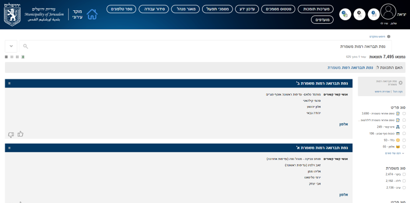
תוצאות החיפוש יופיעו כאן
מעולה! חיפשתם את הנפה ואיתרתם את אנשי הקשר להמשך הטיפול
לא בדיוק… נסו שוב…
לא נכון… לפניכם האזור הנכון
סימולציית הכנה ליציאה למרוץ
אספתם את המידע מהתושב וכעת עליכם להעביר את הפנייה לגורם המטפל. גררו את השלבים למקום הנכון לפי סדר העבודה במוקד.
מחסן אפשרויות:
מזינים את כתובת האירוע
ממלאים את פרטי הפונה
נכנסים לניהול ידע ומאתרים את איש הקשר הרלוונטי
בודקים האם קיימת חלוקה לפי אזור / נפה / רובע
מעבירים את הפנייה לגורם המטפל
בוחרים נושא פנייה ומתעדים את תיאור הפנייה
מצוין!
זהו רצף העבודה במערכת.
לאחר השלמת פרטי הפנייה ובחירת הנושא, ניתן לראות את האגף והמחלקה המטפלים. כאשר קיימת חלוקה לפי אזור, נפה או רובע, יש לאתר את איש הקשר המתאים בניהול ידע לפני העברת הפנייה להמשך טיפול.
לא נכון…
נסו שוב!
השלבים שסומנו בכתום אינם במקום הנכון. השלבים שסומנו בירוק נשארים במקומם.
לא נכון…
שימו לב לסדר הפעולות.
כדי שהפנייה תגיע לגורם הנכון, חשוב לפעול לפי הסדר: תחילה משלימים את פרטי הפנייה, לאחר מכן בודקים את הגורם המטפל ואת חלוקת האחריות, ורק בסיום מעבירים את הפנייה לטיפול.
פניות הדורשות מעבר למסלול טיפול מיידי
לא כל פנייה מטופלת באותו אופן. במקרים מסוימים, מעבר לפתיחת הפנייה במערכת, נדרש ליצור קשר עם גורם מטפל באופן מיידי.
מקרים אלו כוללים:
פניות עם רגישות
אנשים עם מוגבלויות
משפחות שכולות
מפגעים בטיחותיים
אירועי חירום
פניות המתקבלות מחוץ לשעות הפעילות של העירייה
הפניות המיוחדות מתבצעות ב-4 מצבים:
משמרת ערב
משמרת לילה
משמרות סופ"ש
במצב חירום
כאשר מתקבלת פנייה בשעות אלה ניתן לפנות לכונן התורן של המחלקה. הכונן הוא איש הקשר האחראי לטיפול בפניות דחופות או בפניות שהן מחוץ לשעות העבודה.
פנייה לכונן
בכל תחילת משמרת היכנסו לניהול ידע, לשונית כוננות יומי, ושם תראו את טבלת הכוננים לאותה משמרת.
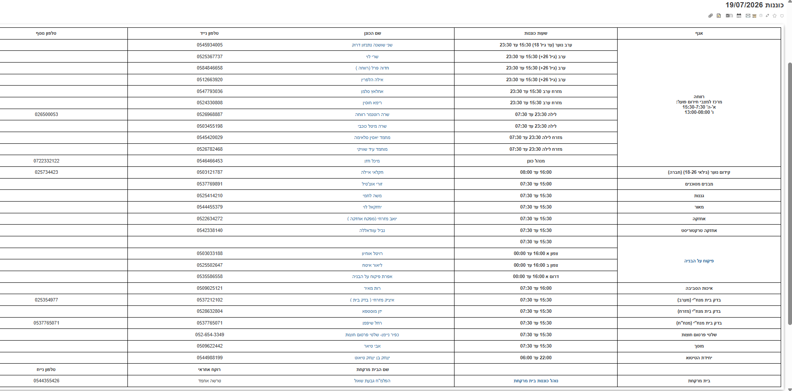
שימו לב לנקודת הבקרה הבאה!
כאשר מופיע דגל אזהרה על המסלול, לא מסתפקים בהעברת הפנייה במערכת – פועלים מיד ומזניקים את הגורם המתאים.
מוקדנית: "רשמתי את כל הפרטים, ואיתרתי את הגורם המטפל."
השלמתם את פרטי הדיווח, בחרתם את נושא הפנייה ואיתרתם את הגורם המטפל.
מה הצעד הבא לפני שמסיימים את השיחה?
מעולה!הפנייה מוכנה לחצות את קו הסיום.
לפני סיום השיחה יש לבצע "שמור ונתב" ולוודא שכל פרטי הפנייה נשמרו במערכת. לאחר מכן יש לעדכן את התושב שהפנייה הועברה לטיפול ושמספר הפנייה יישלח אליו בהודעת SMS.
לא נכון…עצרו – עדיין לא חוצים את קו הסיום.
סיום השיחה לפני שמירת הפנייה עלול לגרום לכך שהמידע לא יישמר במערכת. תחילה מבצעים "שמור ונתב", מוודאים שהפנייה הועברה לטיפול, מעדכנים את התושב ורק אז מסיימים את השיחה.
מתי הפנייה חוצה את קו הסיום?
ברוב המקרים, לאחר ביצוע "שמור ונתב", הפנייה ממשיכה במסלול הטיפול ומועברת לגורם האחראי.
עם זאת, ישנם מקרים שבהם המוקדנית מאיה נותנת לתושב מענה כבר במהלך השיחה, ולכן ניתן לסגור את הפנייה בסיום השיחה ולאחר השלמת הטיפול.
לדוגמה: לכידת נחש, הפניה לבזק, תקלה בפסנתרי רחוב ועוד.
מתי הפנייה חוצה את קו הסיום?
לחצו על השדה שבו מדווחים במערכת על סיום הטיפול וסגירת הפנייה.
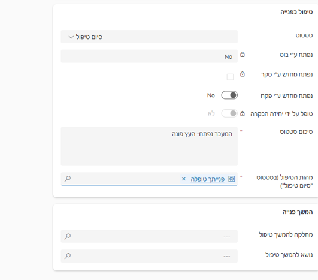
מעולה! כאן מעדכנים את הסטטוס ל"סיום טיפול" וסוגרים את הפנייה
לא בדיוק… נסו שוב…
לא נכון… לפניכם האזור הנכון
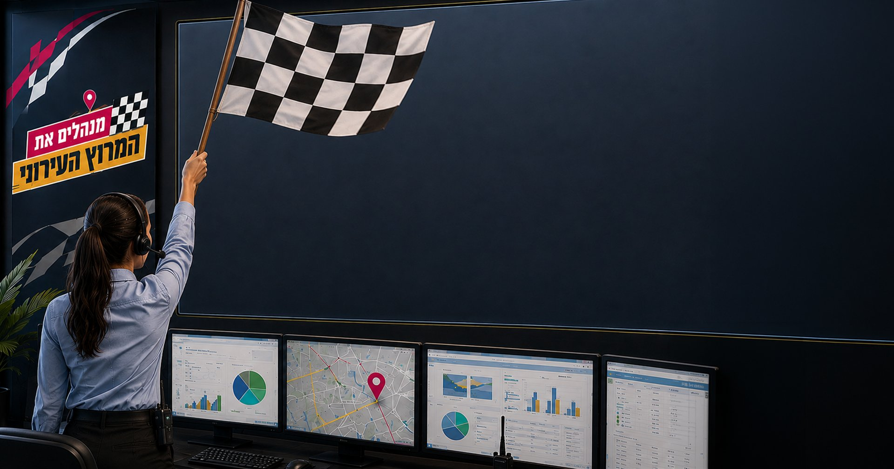
מהזינוק ועד קו הסיום
לאורך הלומדה ניהלתם את המסלול מרגע כניסתה של פנייה לחדר הבקרה ועד להעברתה להמשך טיפול.
בדרך:
קיבלתם את הדיווח וזיהיתם מה קרה בשטח
אספתם את המידע הנדרש ובניתם תמונת מצב מלאה
תיעדתם את פרטי הפנייה במערכת
זיהיתם את האגף, המחלקה וגזרת האחריות המתאימים
איתרתם את איש הקשר שאליו יש להעביר את הפנייה
הגבתם למצבים מיוחדים הדורשים פעולה מיידית
שמרתם, ניתבתם וסגרתם את הפנייה בהתאם לתהליך העבודה
בכל פנייה, אתם מנהלי המרוץ: מקשיבים, שואלים את השאלות הנכונות, מכוונים את הפנייה למסלול המתאים ומוודאים שהיא מגיעה ליעד הנכון.
בזכותכם המירוץ הושלם בהצלחה!
🏁 חציתם את קו הסיום!
סיימתם את יחידה 4 – טיפול בפנייה.
מפת המרוץ העירוני
המוקדנית מאיה היא נקודת הזינוק של תהליך הטיפול בפנייה.
לפניכם ארבע תחנות מרכזיות שילוו אתכם מקבלת הדיווח ועד לסגירת הטיפול בצורה מקצועית ומדויקת.
 נכון מאוד!עדיין חסרים פרטים לפני שממשיכים במסלול!
נכון מאוד!עדיין חסרים פרטים לפני שממשיכים במסלול! לא נכון…עדיין חסרים פרטים לפני שממשיכים במסלול!
לא נכון…עדיין חסרים פרטים לפני שממשיכים במסלול!

 שימו לב לנקודת הבקרה הבאה!
שימו לב לנקודת הבקרה הבאה!